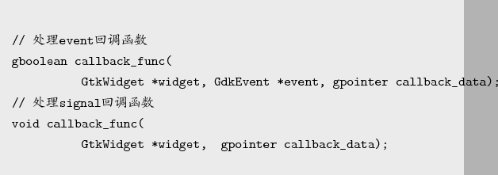
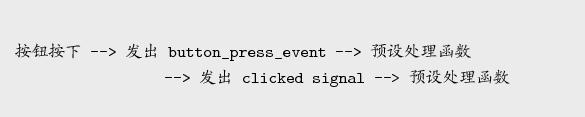

Next: Gtk绘图方式 Up: 事件处理模式 Previous: 事件和信号 Contents
为了连结一个事件与Callback函数，一样是使用g_signal_connect()，不过处 理event的Callback函式与signal的Callback函式在宣告时有些不同，以下是Callback函数定 义：
0.9

1.0
处理event的Callback函数多了一个GdkEvent*参数，而返回值的部份，可以控制事件是否进行 下一步传播，传回TRUE表示这个事件到止已获得处理，事件不用继续传播，将不会发出对应 的signal，传回FALSE表示事件继续传播，GtkWidget对象发出对应的signal。
event的处理函数会在signal的处理函数之前先处理，以按下按钮为例，基本上的
顺序为：
0.9

1.0
您可以设置事件的Callback函数，拦截button_press_event，当处理完传回TRUE时，就不 会发出clicked的signal,也就不会继续预设的signal处理函数，只有在传回FALSE时，才会 发出clicked的signal，则设置的signal处理函数才会被执行。